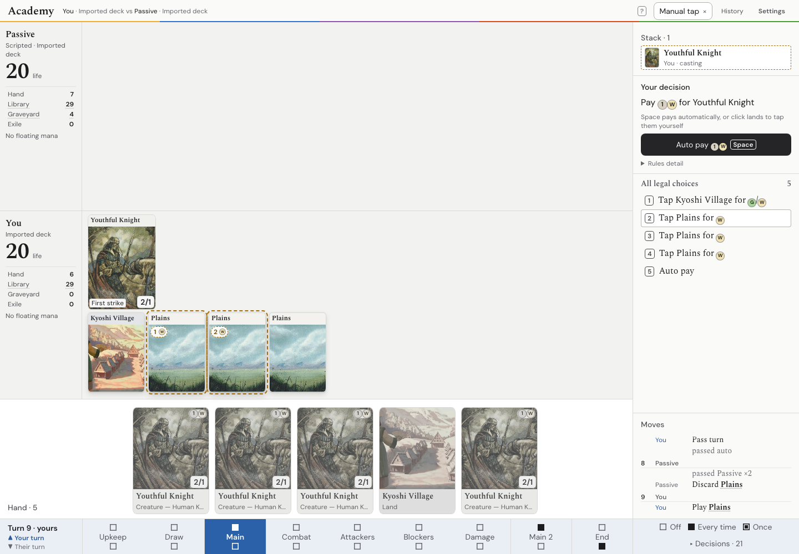
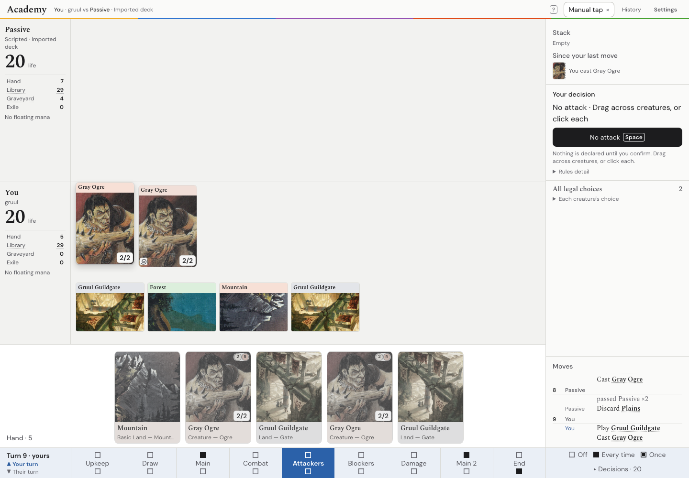
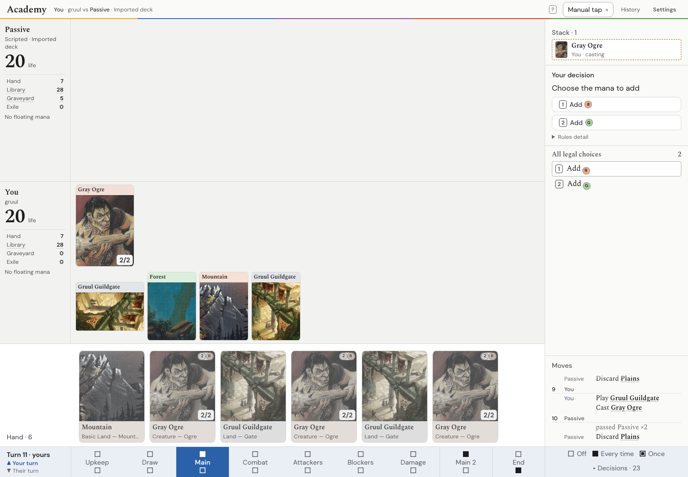
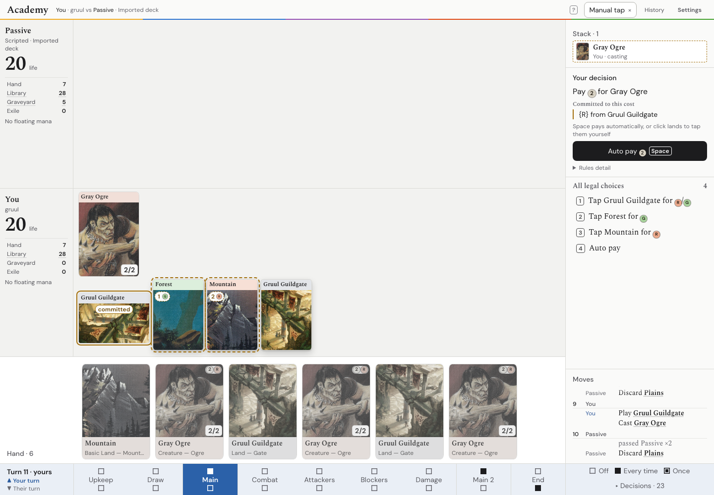

Pass 6 (c43f83e3d3) moved modal collapse into Game::mana_choice_actions. Compress
(046392c616) then rewrote the payability and equivalence checks in mana.rs
after the last QA build. Before running anything, I rebuilt the release extension from HEAD and swapped it in atomically. I also rebuilt the static SPA,
which main's merge had changed (new Settings menu, combat draft). The browser games ran in configured launches
(managym academy play --opponent passive --seed 11, imported decks) in headless Chromium with
Manual tap selected. The Ward and LLM-text checks used real seeded games through Academy's GameSession
and managym.Env. No scenario helpers were used.
Village + Plains for Youthful Knight {1}{W}: cast with no stop.
Village + 3 Plains: one stop offering Tap Kyoshi Village for {G}/{W}, three Tap Plains for {W} and
Pay the cost (shown as "Auto pay"). Clicking the Village tap finished the payment with no color modal.
The recorded trace shows the result: Village + 1 Plains tapped, 2 Plains untapped.
I ran the same position through GameSession twice: casting on the turn the third Plains was played (entered_this_turn)
and on a later turn. Both gave the same single stop, and both ended with ['Kyoshi Village', 'Plains'] tapped.

Guildgate + Forest + Mountain (exact {2}{R}): no stop.
The first browser run cast Ogre on the turn the second Guildgate was played. There was no stop, and all four lands
looked upright in the end screenshot. That looked like an over-tap, but it was correct. Gruul Guildgate enters tapped,
so the payment was again exact. Replaying the browser's recorded Commands through GameSession confirmed it.
The DOM showed four .turned cards labelled "— Tapped". Academy draws a tapped land as a landscape box,
not a rotated picture.

Casting on a later turn with two untapped Guildgates + Forest + Mountain behaved the same in all five casts:
R and G lead to different payments.Add {R}, a Pay {2} stop showing {R} from Gruul Guildgate as committed.

The stops offer per-source taps beside Pay the cost (Waterfall Aerialist) and Decline.
With ≥2 Villages, the second Village tap no longer opens a modal. That was the regression fixed in the last QA, and it still holds after compress.
When only identical Plains remain, the tap offers drop out and the stop offers only Pay/Decline:
STOP ['Tap Kyoshi Village for {G}/{W}' ×3, 'Tap Plains for {W}', 'Pay the cost (Waterfall Aerialist)', 'Decline']
STOP ['Tap Kyoshi Village for {G}/{W}' ×2, 'Tap Plains for {W}', 'Pay the cost (Waterfall Aerialist)', 'Decline']
STOP ['Pay the cost (Waterfall Aerialist)', 'Decline']
STOP ['Tap Kyoshi Village for {G}/{W}', 'Tap Plains for {W}' ×3, …] → ['Pay the cost (Waterfall Aerialist)', 'Decline'] # seed 5
A0 Tap for mana P1 (Kyoshi Village). Native description: Tap Kyoshi Village for {G}/{W}
A1 Tap for mana P2 (Plains). Native description: Tap Plains for {W}
A2 Tap for mana P3 (Plains). Native description: Tap Plains for {W}
A3 Tap for mana P4 (Plains). Native description: Tap Plains for {W}
A4 Pay the offered cost
The plan's Python acceptance run (plus tests/env/test_skip_forced_decisions.py) gave 161 passed and 1 failed.
test_no_runner_turns_skipping_off greps the source for skip_trivial=false. It flagged
managym/src/flow/mana.rs:2883, the doc comment Pass 6 wrote on mana_choice_actions
(so `skip_trivial=false` and `skip_trivial=true` stay in lockstep). CI would have failed the same way.
I reworded the comment to "games with and without skip_trivial stay in lockstep". That file now passes 4/4, and the
other 161 tests had already passed. The change is comment-only, so the built extension still matches.
source_taps, semantic_conformance_tests) or Engine Budget.
The release build is on a host under heavy load (load average 50–90), so those, and the speed comparison against base, are left to CI on the next push.{R} as text rather than pips. This predates the change.test_recording_narration.py covers it and passes.